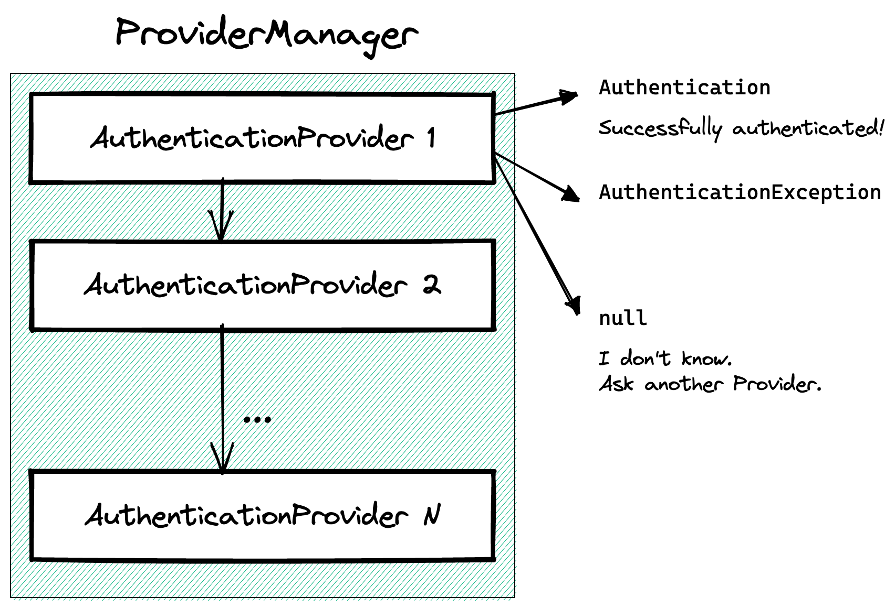

<!doctype html>
<html lang="en">

	<head>
		<meta charset="utf-8">

		<title>Spring Security - The Good Parts™</title>

		<meta name="description" content="...">
		<meta name="author" content="Daniel Garnier-Moiroux">

		<meta name="apple-mobile-web-app-capable" content="yes">
		<meta name="apple-mobile-web-app-status-bar-style" content="black-translucent">

		<meta name="viewport" content="width=device-width, initial-scale=1.0">

		<link rel="stylesheet" href="dist/reset.css">
		<link rel="stylesheet" href="dist/reveal.css">
		<link rel="stylesheet" href="dist/theme/white.css" id="theme">

		<!-- Theme used for syntax highlighting of code -->
		<link rel="stylesheet" href="plugin/highlight/vs.css">

    <style>
      .reveal pre {
        width: 100%;
      }

      .reveal :not(pre)>code {
        /* TODO */
        color: #a31515;
        padding: 2px 5px;
        background-color: #f8f8f8;
        border: solid 1px #ddd;
        border-radius: 3px;
      }

      button {
        border: none;
        background: none;
        font-size: 3rem;
      }

      :root {
        --r-heading-text-transform: none;
        --r-heading-color: #1958BF;
        --r-main-font: Open Sans, Source Sans Pro, Helvetica, sans-serif;
        --r-heading-font: Montserrat, Source Sans Pro, Helvetica, sans-serif;
      }

      .reveal h2 {
        margin-top: 2rem;
        margin-bottom: 3rem;
      }

      .reveal .slides section li.fragment.highlight-blue.visible {
        color: #EB8038;
        font-weight: bold;
      }

      li {
        margin-top: 20px;
        margin-bottom: 20px;
      }
    </style>
	</head>

	<body>

		<div class="reveal">

			<!-- Any section element inside of this container is displayed as a slide -->
			<div class="slides">
        <section data-markdown
                  data-background-image="images/spring-logo.svg"
                  data-background-size="180px"
                  data-background-position="bottom 20px left 30px"
                  >
          <script type="text/template">
            ## Spring Security - The Good Parts™

            

            VoxxedDays Luxembourg - 2023/06/21

            Daniel Garnier-Moiroux

            ---

            ## Daniel Garnier-Moiroux

            

            Software Engineer @ VMware (Tanzu Spring)

            https://garnier.wf/

            https://github.com/Kehrlann

            @Kehrlann / dgarnier@vmware.com

            ---

            <br>

            ## Spring Security

            ---

            <br>

            ## Spring Security

            # 😬

            ---

            <br>

            ## Spring Security

            # 🤯

            ---

            <br>

            ## Spring Security

            # 😱🤕😵‍💫

            ---

            <br>

            ## Spring Security

            # ❤️

            ---

            ## Contents

            1. Demo: a baseline <!-- .element: class="fragment highlight-blue" -->
            2. Theory
                1. Filter - "HTTP building block"
                2. Authentication - "domain language"
                3. AuthenticationProviders - "to authenticate"
                4. Configurers - "navigate Spring Security"

            ---

            ## Demo time!

            # 🍃🔐

            > Source:
            >
            > https://github.com/Kehrlann/spring-security-the-good-parts-code

            ---

            ## Contents

            1. Demo: a baseline
            2. Theory
                1. Filter - "HTTP building block" <!-- .element: class="fragment highlight-blue" -->
                2. Authentication - "domain language"
                3. AuthenticationProviders - "to authenticate"
                4. Configurers - "navigate Spring Security"

            ---

            ## Spring Security Filters

            ```java
            public void doFilter(
              HttpServletRequest request, 
              HttpServletResponse response, 
              FilterChain chain
              ) {
                // 1. Before the request proceeds further (e.g. authentication or reject req)
                // ...

                // 2. Invoke the "rest" of the chain
                chain.doFilter(request, response);

                // 3. Once the request has been fully processed (e.g. cleanup)
                // ...
            }
            ```

            ---

            

            ---

            ## Filters - OOP diagram

            

            ---

            ## Filters - callstack

            

            ---

            ## Filters - callstack

            

            ---

            ## Demo time!

            # ⛔️

            ---

            ## A "real" example

            `CsrfFilter.java`

            ---

            ## "Cross Site Request Forgery"

            

            ---

            ## Protection

            

            `<input type="hidden" name="_csrf" value="yyy" />` <!-- .element: class="fragment" -->

            ---

            ## A "real" example

            Spring Security: `CsrfFilter.java`

            ---

            ## And all the other filters?!

            ```yaml
            logging.level:
              org.springframework.security: TRACE
            ```

            Or:

            ```java
            org.springframework.security.web.DefaultSecurityFilterChain

            org.springframework.security.web.FilterChainProxy.VirtualFilterChain
            ```

            ---

            ## Recap!

            1. Create a `Filter`
                1. Takes HttpServletRequest, HttpServletResponse in
                2. Reads from request, (sometimes) writes to Response
                3. Sometimes does nothing!
            2. Register the `Filter` in the `SecurityFilterChain`
                1. _Before_ `AuthorizationFilter.class`
                2. Or any other filter you know.

            ---

            ## Contents

            1. Demo: a baseline
            2. Theory
                1. Filter - "HTTP building block"
                2. Authentication - "domain language" <!-- .element: class="fragment highlight-blue" -->
                3. AuthenticationProviders - "to authenticate"
                4. Configurers - "navigate Spring Security"

            ---

            ## Authentication objects

            Spring Security produces `Authentication`. They are used for:
            - Authentication (`authn`): _who_ is the user?
            - Authorization (`authz`): is the user _allowed to perform_ XYZ?

            ---

            ## Vocabulary

            - **Authentication**: represents the user. Contains:
              - **Principal**: user "identity" (name, email...)
              - **GrantedAuthorities**: "permissions" (`roles`, ...)

            ```text
            More details in the reference docs:

            > Servlet Applications
                > Authentication
                    > Architecture
            ```

            ---

            ## Vocabulary (cont')

            - **Authentication** also contains:
              - **.isAuthenticated()**: almost always `true`
              - **details**: details about the _request_
              - (Credentials): "password", often `null`

            ```text
            More details in the reference docs:

            > Servlet Applications
                > Authentication
                    > Architecture
            ```

            ---

            ## For your own apps

            **DO NOT**

            Use `UsernamePasswordAuthenticationToken` everywhere

            <br>

            **INSTEAD**

            Create your own `Authentication` subclasses

            ---

            ## Wrapped in a SecurityContext

            - Thread-local, not propagated to child threads
            - Cleared after requests is 100% processed

            ---

            ## Remember our filter?

            ```java
            public void doFilter(
              HttpServletRequest request, 
              HttpServletResponse response, 
              FilterChain chain
              ) {
                // 1. Before the request proceeds further (e.g. authentication or reject req)
                // ...

                // 2. Invoke the "rest" of the chain
                chain.doFilter(request, response);

                // 3. Once the request has been fully processed (e.g. cleanup)
                // ...
            }
            ```

            ---

            ## More like this

            ```java
            public void doFilter(
              HttpServletRequest request, 
              HttpServletResponse response, 
              FilterChain chain
              ) {
                // 1. Decide whether the filter should be applied

                // 2. Apply filter: authenticate or reject request

                // 3. Invoke the "rest" of the chain
                chain.doFilter(request, response);

                // 4. No cleanup
            }
            ```

            ---

            ## Demo time!

            # 🤖

            ---

            ## Recap!

            Some filters produce an `Authentication`

            1. Read the request ("convert" to domain object)
            2. Authenticate (are the credentials valid?)
            3. Save the `Authentication` in the `SecurityContext`
            4. Or reject the request when creds invalid

            ---

            

            ---

            <br>

            <br>

            ## ... Interlude ...

            ---

            

            ---

            ## Contents

            1. Demo: a baseline
            2. Theory
                1. Filter - "HTTP building block"
                2. Authentication - "domain language"
                3. AuthenticationProviders - "to authenticate" <!-- .element: class="fragment highlight-blue" -->
                4. Configurers - "navigate Spring Security"

            ---

            ## Authentication

            About those `Authentication`s... I may have ~lied~ oversimplified a bit.

            🤫

            ---

            

            ---

            

            ---

            ## Demo time!

            # 🧑🏻

            ---

            ## Recap!

            1. `Authentication`s are a sets of credentials for authentication AND the
            output of successful authentication.
            2. Transforming credentials into authentication happens in `AuthenticationProviders`
            3. That's where you should create your own authentication rules

            ---

            ## Contents

            1. Demo: a baseline
            2. Theory
                1. Filter - "HTTP building block"
                2. Authentication - "domain language"
                3. AuthenticationProviders - "to authenticate"
                4. Configurers - "navigate Spring Security" <!-- .element: class="fragment highlight-blue" -->

            ---

            ## tl;dr

            1. `Filter` for security decision on HTTP requests
            2. `AuthenticationProvider` for custom login
                - with existing filters, see `Configurers`
            3. `Filter` + `AuthenticationProvider` for custom login
                - 🚫 Don't do login in your `@Controller` 🚫

            ---

            ## Resources

            - Slides:
              - https://garnier.wf/spring-security-workshop-slides/
            - Code:
              - https://github.com/Kehrlann/spring-security-the-good-parts-code/
            - Me:
              - dgarnier@vmware.com
              - @Kehrlann / https://garnier.wf
          </script>
        </section>
      </div>
    </div>

    <script src="dist/reveal.js"></script>
    <script src="plugin/zoom/zoom.js"></script>
    <script src="plugin/notes/notes.js"></script>
    <script src="plugin/search/search.js"></script>
    <script src="plugin/markdown/markdown.js"></script>
    <script src="plugin/highlight/highlight.js"></script>
    <script>

      // Also available as an ES module, see:
      // https://revealjs.com/initialization/
      Reveal.initialize({
        controls: false,
        progress: true,
        center: true,
        hash: true,
        width: 1280,
        height: 720,
        transition: 'none',
        slideNumber: true,
        center: false,

        // Learn about plugins: https://revealjs.com/plugins/
        plugins: [ RevealZoom, RevealNotes, RevealSearch, RevealMarkdown, RevealHighlight ]
      });

		</script>
    <script src="socket.io/socket.io.js"></script>
    <script src="node_modules/reveal-notes-server/client.js"></script>

	</body>
</html>
